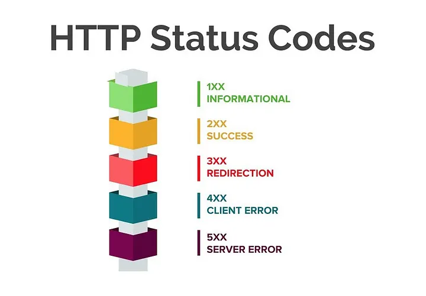
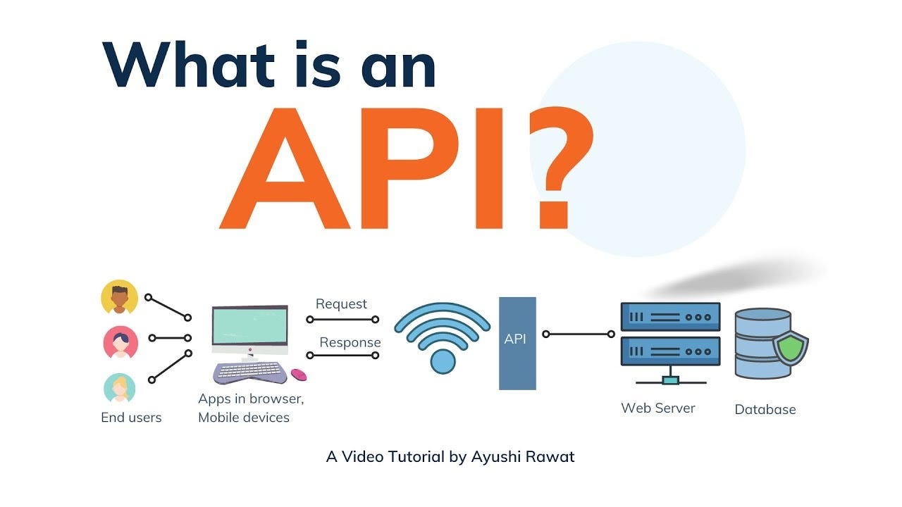
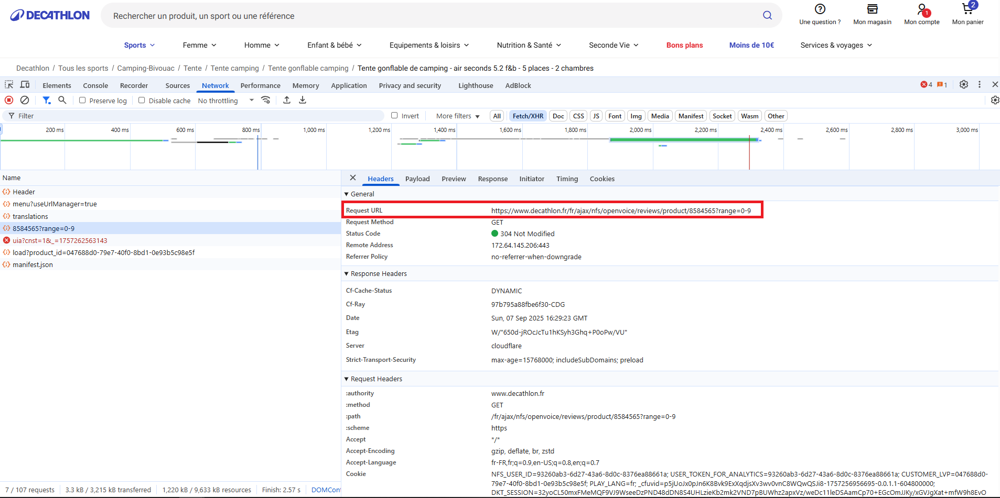
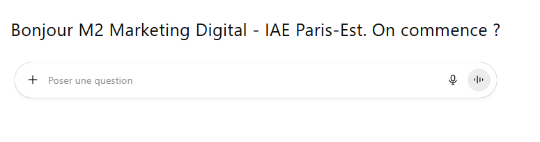

Scraping et utilisation des API
Paris Dauphine - PSL
Note
👉 Toujours vérifier les conditions d’utilisation du site avant de scraper. Le fichier robots.txt indique ce qui est autorisé ou non.
< ><p> et se ferment </p><h1> → titre<p> → paragraphe<a> → lien<div> → section, bloc de pageÀ retenir
Le HTML ≠ langage de programmation,
c’est un langage de structure.
C’est ce qu’on “scrape” pour collecter les avis.
SSR (Server-Side Rendering) : le serveur renvoie une page HTML complète.
→ Scraping direct possible (ex. requests + BeautifulSoup, rvest).
CSR (Client-Side Rendering, souvent via une SPA comme React/Vue/Angular) :
le serveur envoie un HTML minimal, et le contenu est chargé ensuite par JavaScript.
→ Le scraping classique ne voit pas ces données → il faut exploiter l’API interne.
Astuce
Si le HTML semble « vide », ce n’est pas un bug :
la page est rendue en CSR.
👉 Observer l’onglet Network permet d’identifier l’API interne utilisée par le site,
souvent plus stable et propre à exploiter que le DOM.
test_scrap_marketing_jobs.R
.classe, #id, div > p).
div.review p.text → récupère le texte des avis.//div[@class='review']//p[@class='text']👉 Même page, deux méthodes différentes pour pointer les mêmes données.
data-*).nth-child).Attention
Mettre en place des tests de fumée : vérifier régulièrement qu’un petit échantillon s’extrait encore.
👉 Déclencher une alerte si 0 résultat.
À retenir
Les codes HTTP sont comme des panneaux de signalisation :
ils indiquent l’état de la route entre l’utilisateur et le serveur .

robots.txt, crawl-delay, sitemap.xml.Note
En recherche : privilégier API officielles, anonymisation, et documenter vos mesures de conformité.
\d+ → détecte une suite de chiffres (ex. “123”).[A-Z][a-z]+ → détecte un mot commençant par majuscule.https?://\S+ → détecte une URL.À retenir
Les regex sont comme un aimant à motifs textuels.
Elles permettent d’affiner le scraping pour récupérer ce qu’on veut exactement.
Analogie
Une API fonctionne comme un menu de restaurant :
- le menu = les services disponibles,
- la commande = la requête,
- le plat servi = la réponse de l’API.

Comparaison
👉 L’API est plus simple à exploiter dès qu’elle est disponible.

Beaucoup de sites chargent les avis via une API JSON en arrière-plan.
On peut la repérer via l’onglet Network de DevTools. Voir script test_scrap_api_decathlon.ipynb
Exemple Decathlon (avis produit 8584565) : https://www.decathlon.fr/fr/ajax/nfs/openvoice/reviews/product/8584565?range=0-9
range=0-9 → renvoie les 10 premiers avisrange=10-19, 20-29, etc. pour paginerRSelenium, Selenium en Python).Éthique & légalité
Toujours respecter :
- Les conditions d’utilisation du site,
- Les règles RGPD si données personnelles,
- Et informer si vous utilisez ces données dans une étude.
Important
Rester du côté « responsable » : ne pas dégrader les services, ne pas outrepasser des restrictions explicites.
rvest ou BeautifulSoup ne suffit pas.👉 C’est le rôle de Selenium (Python/R) et Playwright (Python/JS).
Note

À retenir
Apprenez les bases, mais pensez déjà à coder avec les LLMs.
Leur utilisation est encouragée dans ce cours.